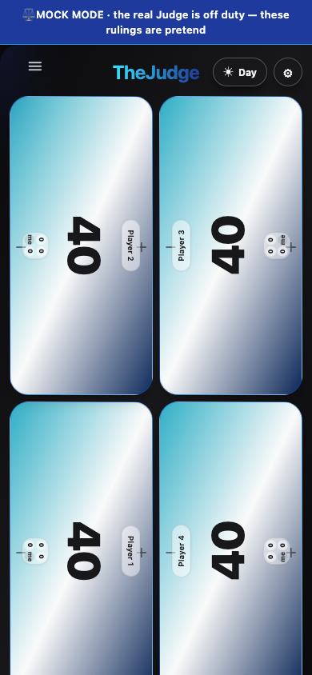
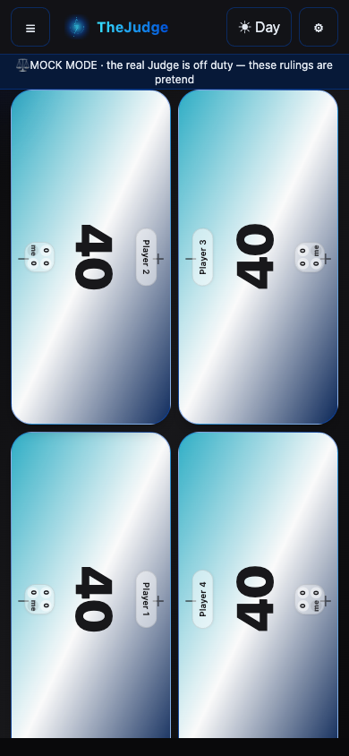

Shared chrome & Menu
Before: menu-390x844.png · menu-1440x900.png. The header above and the tray behind ☰ are the ones every page shares (`shell.css` + `flow.js`): the tray slides in from the left like today's, the destinations are a plain list with the current screen lit, Question History sits right under the two question flows, Send feedback under a divider, Theme as six orbs with no names or blurbs, and the colour's flair fills the foot. The header above is the banner every page shares. The candidate symbols for each colour are on motif-gallery.html.


Life Tracker: shared chrome inherited, own screen untouched (REQ-202)
Life Tracker's own counters and layout are unchanged; only the header chrome around them reads this token set — see life-tracker-after.html.

